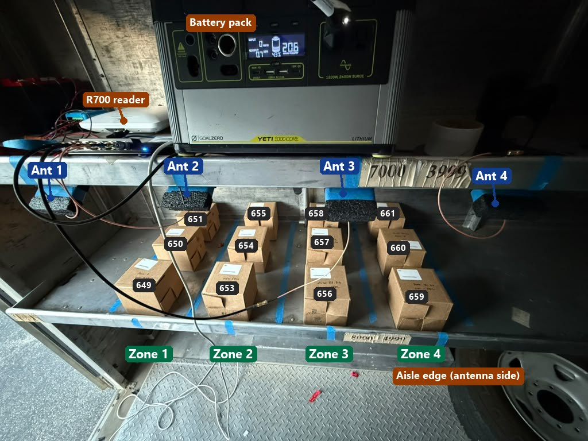
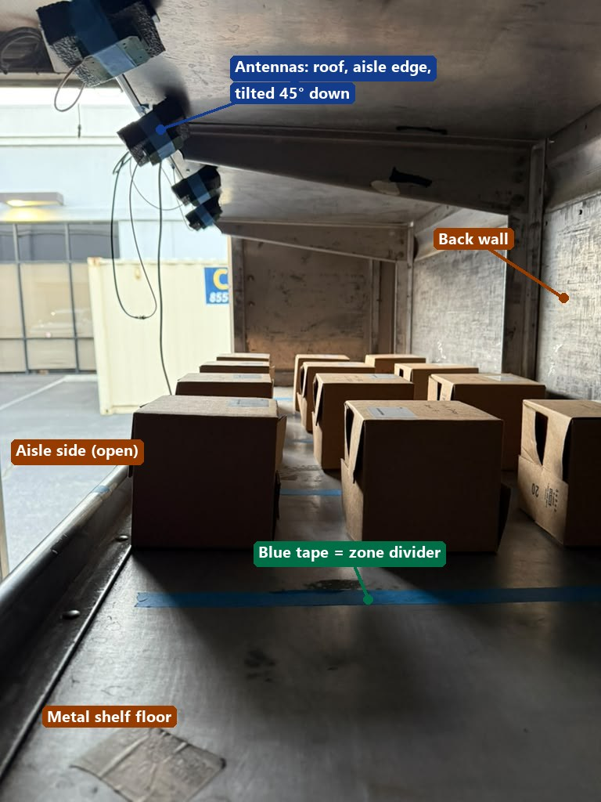
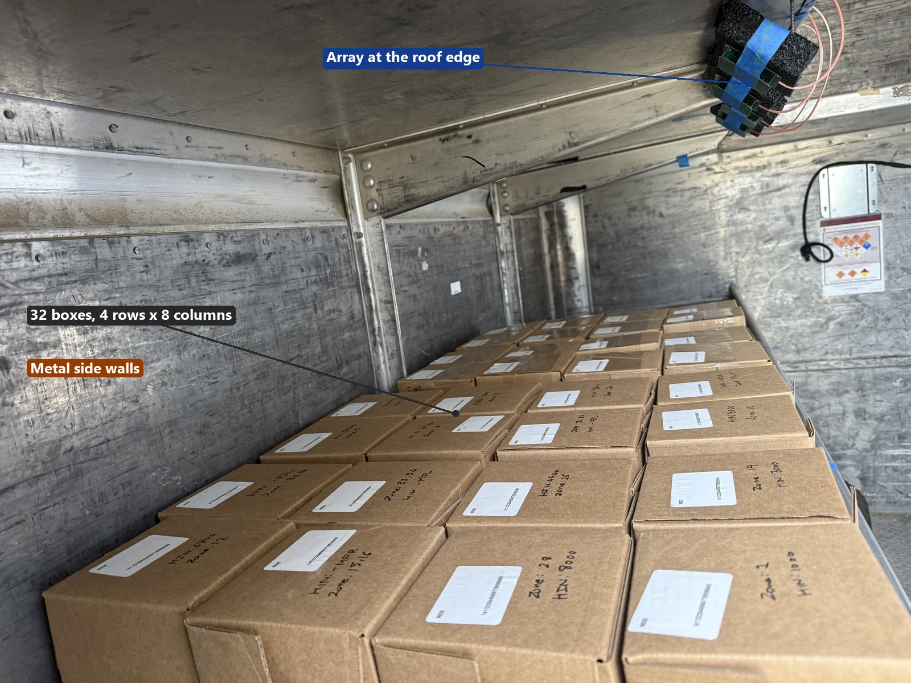
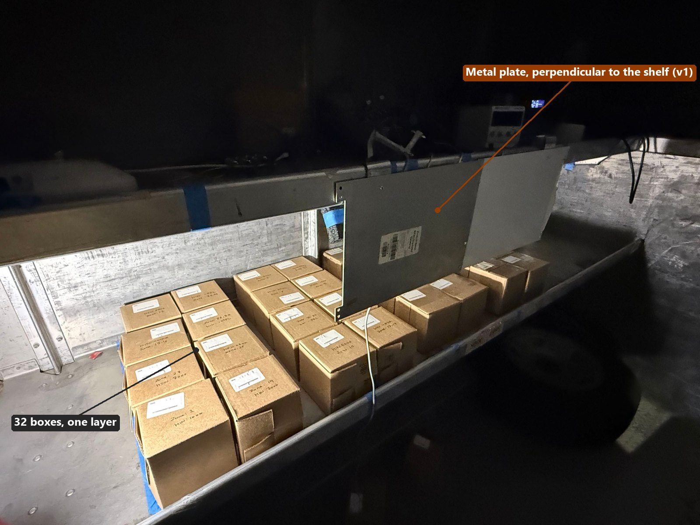
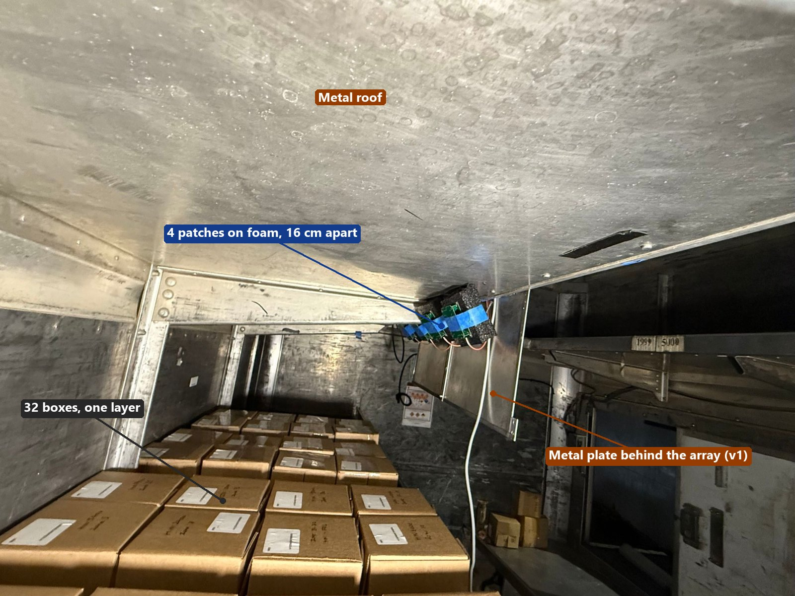
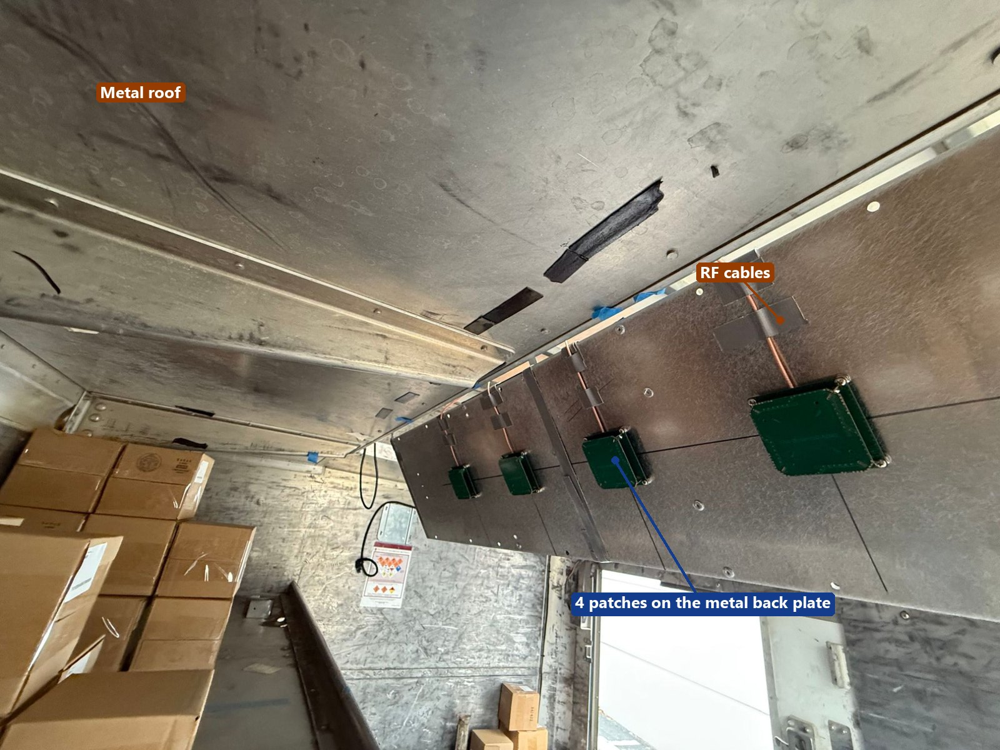
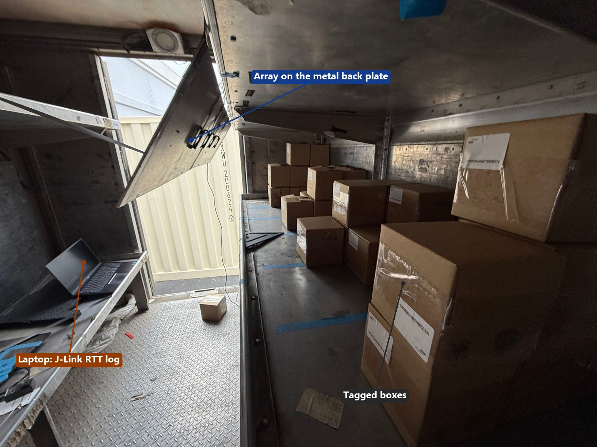

Truck shelf zone tests
Can a reader tell which zone of a truck shelf a box sits in, using RSSI and phase? This page collects every test so far. The early tests split the shelf into four quadrants with 2 antennas; the later ones use 4 side-by-side 1 ft zones with one antenna per zone. Every figure shows each box: where it was, what each antenna heard, and which zone it was assigned.
What the tests show
- YESThe phase measurement is clean. About 1° of noise per channel at 12–15 dBm, and an untouched box repeats its pattern at 0.99. At 20 dBm the noise grows to 2–17°, so stay at 15 dBm or less.
- NOPhase does not give distance here. Distances from the phase slope across the channels came out 40–700" wrong, and not even in the right order. Reflections off the metal swamp the direct path.
- SPOTThe phase pattern marks an exact spot, not a zone. Different boxes on the same spot match at about 0.9. Moving a box 1–2" drops the match to 0.4–0.8, and boxes 6" apart in depth inside the same zone look no more alike than boxes in other zones.
- RSSIStrongest antenna is right 75% of the time at the zone centers, and 50% with three boxes per zone. Zone 3 is called zone 4 in every session, and the front row reads 10–20 dB weaker than the middle row.
- GRIDA full calibration grid shows no zone pattern. With 32 boxes on the shelf, strongest antenna drops to 44–47%. Boxes 6" apart have equally similar phase patterns whether they share a zone or not. The phase lookup worked (10/12) only when a calibration box sat within about 4".
- ENVSmall physical changes change the pattern. Antenna 2 was tilted slightly further down after move 1 of the rotation test. Zone 2's pattern on antenna 2 went from 0.96–0.99 (before and after, separately) to 0.61 between the two, while zones 1, 3 and 4 kept theirs (0.91–0.96). A stationary tag's pattern also dropped to 0.49 when a box came within 12".
Phase is reliable as a measurement but not as a zone signal on its own. A phase lookup only works for spots that were surveyed, and has to be redone when the layout changes. Reliable zone calls will have to come from the antennas: placement, aim, beam width, and possibly metal dividers.
The 4-zone shelf
Four zones of about 1 ft each sit side by side along a metal truck shelf. One antenna per zone is mounted under the roof at the aisle edge, centered on its zone and tilted 45° down toward the back wall. The nearest box (front row) is about 1 ft from its antenna. Ports 1–4 serve zones 1–4, left to right as seen from the aisle. Each box carries its tag label on the top.



Two antennas, four quadrants
Antennas on the left and right side walls at mid-depth, pointing inward. One box was moved over a 8 × 6 grid of spots, 4" apart. Each cell is one spot, colored by the quadrant it was assigned to; a dashed red outline means the call was wrong. The lookup-table methods were tested with 5-fold cross-validation, leaving out whole spots.
Quadrants use your numbering: Q1 back right, Q2 back left, Q3 front left, Q4 front right. The numbers in each cell are the box's RSSI on antenna 1 / antenna 2 (dBm). Best result: 42% (fingerprint RSSI + phase slope), against 25% for a random guess.
How fast the phase pattern changes
"Match" compares the phase pattern across all 50 channels between two readings: 1 means the same pattern, about 0.15 means unrelated. Left: one box moved away from a marked spot in steps. Right: the reference tag never moved while the test box was placed around it during the 48-spot survey.
Box moved from its spot
Putting the box back on the marked spot gave 0.90 / 0.95, so anything well below 0.9 is a real change.
Tag that never moved, with a box nearby
With the box within 12": median match 0.49 on antenna 1. Its RSSI moved by only 0.5–1.2 dB.
Zone centers and rotation
One box at the center of each zone (12" deep). After each capture every box moved one zone to the right, with the box in zone 4 wrapping to zone 1, so each spot was seen with four different boxes. Move 4 brings every box back to its start spot. The phase call compares each reading with the readings from the other placements and picks the zone of the closest pattern.
Phase-pattern match by comparison type
Median over the 4 antennas, at 12 and 15 dBm. "Same box, put back" is pulled down by zone 2: antenna 2 was tilted slightly further down after move 1, which changed its pattern. In zones 1, 3 and 4 the put-back match on the zone's own antenna was 0.89–0.99. After the tilt (moves 2–4), different boxes on the same spot matched 0.80–1.00 on every antenna.
Reading the cells
Bars show the box's median RSSI on antennas A1–A4, scaled from −72 to −30 dBm; the outlined bar is the zone's own antenna. The badge is the zone the box was assigned to. The bottom line is the lead of the strongest antenna (RSSI call) or the best pattern match in the right zone against the best in any other zone (phase call).
Hover or tap a cell for reads, phase noise and all four RSSI values.
Three boxes per zone
Three boxes per zone at the front (about 6" deep), middle (12") and back (18"), all on the shelf together. The phase call uses only the zone-center readings from test 4 as the lookup, so the middle row is on surveyed spots and the front and back rows are not.
How alike are the 12 boxes' phase patterns?
15 dBm, mean over the 4 antennas, same capture. If each zone had its own pattern, the four outlined blocks would be dark. They aren't: the most similar box was in the same zone for only 3 of 12 boxes.
Why the front row is weak
Front boxes are the closest to their antenna, yet read 10–20 dB weaker than the middle box (box 649: −56.5 dBm on antenna 1, box 650: −36). Beam aim can explain about 2–3 dB of that, so most of the loss likely comes from the tag's orientation on the box, the antenna mount, or a reflection null at the front row.
Zone 3 boxes again read strongest on antenna 4, now with three more boxes, so antenna 3's aim, mount or cable needs checking.
Show all 12-box readings as a table
Calibration grid: is there a zone pattern?
32 boxes fill the shelf, two columns per zone and four rows, about 6" apart (positions estimated from the layout sketch). Each box is called using only the other 31 boxes as the lookup table, so its nearest calibration neighbour is 6" away.
Phase match by distance between boxes
Median pattern match over all box pairs in the grid. At the same distance, boxes in the same zone are no more alike than boxes across a zone boundary, so the pattern carries distance, not zone.
Accuracy by method
"12-box layout" uses the 32-box grid as the lookup table for the test 5 boxes, whose spots are about 4" from the nearest grid box. Phase called 10 of 12 right at 15 dBm; only 2 of those matched their own tag, so it is matching nearby spots, not tags.
No zone pattern shows up. With the shelf full, RSSI loses its structure: antenna 2 is the strongest antenna for middle-row boxes from zone 1 to zone 3, and antenna 1 hears a zone 4 box as loudly as its own. The phase lookup works only when a calibration box sat within about 4" of the box being called (10/12), not at 6" (44–53%).
Silion E710 against the R700
The R700 was swapped for the Sapphire board's Silion E710 reader on the same four antennas, with the 32 boxes back in the calibration layout. The capture ran 120 s in session S0, target A, mode 4141 (Miller 4, the closest E710 mode to the R700's mode 2), with antennas 1–2 at 12 dBm and 3–4 at 14 dBm to make up for their longer cables. Every method below is scored the same way on both readers.
Zone accuracy by method
6" neighbours: each box called from the other 31 of the same capture, so its nearest calibration box is 6" away. Same spot: a later capture with the boxes untouched, called from the calibration capture. WCL is a weighted centroid: the antenna positions averaged with weights from RSSI (mW), or from the relative phase slope and RSSI, then the zone the estimate falls in. FW vote is the firmware's Zircon rule (10signal/8 × reads × stability). Locator is the Zone Locator's combined call. Border-tolerant: a box in a column next to a zone line also counts as right when it is called the zone across that line (655 at 9" may be Z1 or Z2, 664 at 21" may be Z2 or Z3 but not Z1). The shelf-end columns at 3" and 45" (650, 213) must be called exactly. 24 of the 32 boxes sit next to a line, so this score is lenient; the small figure under each cell is the exact score. The R700 has no 12/14 dBm capture, so its rows use 12 or 15 dBm, and its same-spot test is mode 2 against the mode 1002 calibration.
Signal quality
Calibration boxes only. Channels: distinct hop channels per box per antenna (median). Weak pairs: box–antenna pairs read on fewer than 6 channels, too few for a phase pattern. Phase noise: spread of repeated reads on the same channel (median). RSSI spread: the same, in dB; the Silion reports whole dB and repeats exactly on a channel.
The Silion E710 does this job as well as the R700, with cleaner phase, but not better: each box's zone is still only reliable when a calibration box sat on the same spot. The limit is the reflections on the metal shelf, not the reader.
Beam steering: one port at a time
The four zone antennas were replaced by a 4-patch array (elements 16 cm apart) behind a 4×4 Butler matrix, mounted at the middle of the aisle edge under the roof. Each reader port feeds one beam. With the 32 boxes in the calibration layout, each port was run alone for 30 s (Silion E710, mode 4141, S0) to see which boxes it reads. First with the zones about 1" apart at 8 and 10 dBm, then with the boxes centred in their zones and 3" between zones at 5, 10 and 15 dBm. Earlier runs, made before the elements were set 16 cm apart, are left out.



Box positions are drawn on the original grid. For the 3" runs the boxes were centred in their zones and kept their zone. Port colours follow the zone each port favoured at 5 dBm: P1 → zone 1, P4 → zone 2, P3 → zone 3, P2 → zone 4.
Share of each port's reads by zone
Bold marks the zone that gets the most of that port's reads. Box counts are out of 32.
All runs
On 2+ ports is the antenna engineer's "multi-zone" count: boxes read by more than one beam. Strongest port right takes the port with the highest median RSSI for each box and maps it to a zone with the 5 dBm beam map.
On this metal shelf the beams only separate the zones at a power too low to read every box. At powers that read the whole shelf, every port reads every zone, and the strongest port is no better than one antenna per zone.
Beam steering on the Zircon board, with metal behind the array
The same 4-patch array and 32 boxes (3" between zones) on the Zircon board: a QM100 reader with a single RF port and an RF switch that selects one of the four beam ports, logged over J-Link RTT. Each port was run alone for 30 s at 5, 10 and 15 dBm. The Zircon reports a raw RSSI through the switch, so its RSSI is about 5 dB lower than the Silion's and should only be compared within the Zircon runs.
| No back metal · Nov 13 | Array on foam under the roof edge, elements 16 cm apart; boxes in one layer. |
| Back metal v1 · Nov 13 | Same array, with a metal plate held perpendicular to the shelf behind it. |
| Back metal v2 · Nov 15 | Array mounted on the metal plate, elements 18 cm apart; boxes in one layer. |
| Back metal v3 · Nov 15 | Same antenna as v2; boxes stacked instead of one layer. |






Box positions are drawn on the original grid. Each setup is scored with its own beam map: without metal and with v1 the ports favoured A2 → zone 1, A3 → 2, A4 → 3, A1 → 4; with v2 and v3, P1 → 1, P4 → 2, P3 → 3, P2 → 4 (the Silion order). In the port views each box shows its median RSSI and how many times it was read in the 30 s. For v3 the boxes were stacked, so the grid shows each box's zone, not its exact position.
Share of each port's reads by zone
Bold marks the zone that gets the most of that port's reads. Box counts are out of 32.
All Zircon runs
Back metal v2 in bold. Strongest port right uses that setup's beam map. Mean RSSI is the mean over every read of the 32 box tags, all ports. When two ports tie on median RSSI, the higher port number is taken.
Mounting the array on the metal plate with the elements 18 cm apart is what makes the Zircon beams separate the zones. Back metal v2 at 5 dBm is the best result so far on either reader: every box read, 23 of 32 called right, and every zone at least 4 of 8.
Antenna height sets the zone separation
A free-space model of the roof antennas (patch, 70° beam, tilted down toward the back wall) gives how much stronger a middle box reads on its own antenna than on the neighbouring zone's antenna. Tilt mostly moves coverage between the front and back rows; the separation between zones depends on height.
| Height above tags | Tilt | Beam center lands | Own vs neighbour antenna | Front vs middle box |
|---|---|---|---|---|
| 12" | 45° | 12" deep | ≈ 10 dB | +2.5 dB |
| 24" | 45° | 24" (back wall) | ≈ 4 dB | −1.6 dB |
| 24" | 63° | 12" deep | ≈ 4 dB | +0.6 dB |
| 36" | 45° | 36" (past the wall) | ≈ 2 dB | −2.2 dB |
| 48" | 45° | 48" | ≈ 1.4 dB | −2.1 dB |
With the front box about 1 ft from the antenna, the model expects about 10 dB between neighbouring zones. The tests measured 1–5 dB at the zone centers, so reflections from the metal shelf and walls take away most of the geometric advantage.
What to try next
- 1Check antenna 3: its aim, mount and cable. Zone 3 boxes read strongest on antenna 4 in every session.
- 2Front-row check: one box on the zone 1 front spot, captured with its tag facing up, toward the aisle and toward the back, to find out why the front row is 10–20 dB weak.
- 3Antenna placement: lower or narrower-beam antennas, less power, or metal dividers between zones, then repeat the 12-box test.
- 4Reader reboot test: reboot the reader and recapture the zone-center boxes. If the patterns still match about 0.95, a reference tag per zone is only needed for monitoring.
Test log
| Started | Session | Setup | Captures | Result |
|---|---|---|---|---|
| Nov 9, 16:39 | 2ant_readtest | 2 side-wall antennas, read check, 20 dBm | 2 | Box read on both antennas |
| Nov 9, 18:34 | 2ant_move | Move test, RF mode 4120, 20 dBm | 10 | Reference tag never read; switched to RF mode 1002 |
| Nov 10, 11:02 | 2ant_move_15dbm | Move test, RF mode 1002, 15 dBm | 10 | Pattern drops to 0.44–0.81 after a 1" move |
| Nov 10, 11:29 | 2ant_grid_17dbm | 48-spot quadrant survey, 17 dBm | 48 | Best method 42%, strongest antenna 12.5% |
| Nov 10, 15:14 | 4zone_centers | 4 boxes at zone centers, 12/15/20 dBm | 3 | RSSI 3 of 4 zones; phase ranging fails; 20 dBm noisy |
| Nov 10, 15:25–15:36 | 4zone_rot1–rot4 | Boxes rotated one zone per capture, 12/15 dBm | 8 | Phase 40/40, RSSI 30/40 (with the start). Antenna 2 tilted down after move 1. |
| Nov 10, 16:54 | 4zone_12box | 12 boxes, 3 per zone, 12/15 dBm | 2 | Phase 17/24, RSSI 12/24 |
| Nov 10, 18:26 | 4zone_cal32 | 32-box calibration grid, 12/15/20 dBm, 60 s each | 3 | Best 53% leave-one-out; no zone pattern; phase lookup 10/12 on the 12-box layout |
| Nov 11, 10:27 | 4zone_cal32_repeat | Same grid, next morning, 12/15/20 dBm | 3 | Phase lookup against the day before: 75–88% |
| Nov 11, 12:51–13:23 | 4zone_mode* | Same grid, RF modes 1002, 2, 4, 4141, 4180 | 20 | Mode 2 cleanest phase (0.6°), 32/32 against the day before |
| Nov 12, 15:12 | silion_cal32 | Silion E710 (Sapphire), same grid, mode 4141, S0, 12/12/14/14 dBm, 120 s | 1 | 18,631 reads, even across antennas; 18/32 leave-one-out |
| Nov 12, 15:19 | silion_test_s0 | Silion E710, boxes untouched, same settings, 120 s | 1 | Locator 32/32, phase pattern 31/32 against silion_cal32 |
| Nov 13 | beam_check_silion8_16cm, _silion10_16cm | Butler array, elements 16 cm apart, zones ~1" apart, one port at a time, 8 and 10 dBm, 30 s per port | 8 | 27–30/32 boxes read; 63–88% on 2+ ports |
| Nov 13 | beam_check_gap3_5dbm, _10dbm, _15dbm | Same array, boxes centred, 3" between zones, 5, 10 and 15 dBm, 30 s per port | 12 | 5 dBm: one zone per port but 16/32 read; 15 dBm: every port reads every zone |
| Nov 13 | zircon_beam_5dbm, _10dbm, _15dbm | Zircon (QM100 + RF switch), same array and boxes, no metal behind the array, 5, 10 and 15 dBm, 30 s per port | 12 | 24–31/32 read; 81–96% on 2+ ports; strongest port right 13–19/32 |
| Nov 13 | zircon_beam_metal_5dbm, _10dbm, _15dbm | Zircon, back metal v1: plate perpendicular to the shelf behind the array | 12 | Strongest port right 19–20/32; zone 4 only 2/8 |
| Nov 15 | zircon_beam_metal_new_5dbm, _10dbm, _15dbm | Zircon, back metal v2: array on the plate, elements 18 cm apart | 12 | 32/32 read; strongest port right 22–24/32; port order now P1, P4, P3, P2 |
| Nov 15 | zircon_beam_metal_new2_5dbm, _10dbm, _15dbm | Zircon, back metal v3: v2 antenna, boxes stacked | 12 | Strongest port right 19–20/32; zone 4 only 2–3/8 |
Data: the session folders in smart_driver_2/sessions. Figures are rebuilt with report/build_data.py. The front, middle and back depths in test 5 are estimates (6, 12 and 18").